About
시오리는 홍익대학교 미술대학 소속 공식 예술전시 기획 소모임입니다. 미술대학 내 다양한 전공을 가진 작가들과의 활발한 커뮤니케이션을 통해 시너지를 일으키고, 개개인의 작업 세계 구축에 있어 효과적인 발전을 도모합니다.
SHIO:RI is an official art exhibition planning collective affiliated with the College of Fine Arts at Hongik University. Through active exchange with artists from diverse disciplines within the college, the group cultivates synergy and encourages the development of each artist’s individual practice.
2019년에 창설된 시오:리는 현재까지 총 13번의 전시를 개최하였습니다.
Founded in 2019, SHIO:RI has presented thirteen exhibitions to date.

[Logotype]
한글과 영문 표기의 ‘:’와 숫자 ‘5’의 형태를 연결하여, 사람들이 모여 있는 모습을 형상화한 로고입니다.
By connecting the colon (:) from the Korean and English name with the numeral 5, the logotype forms a visual motif that represents people coming together.
시오:리
SHIO:RI
15.ri
: ‘십 오리’의 순 우리말
: 부원 개개인이 구축해 온, 그리고 함께 확장해나갈 작업 세계 상징
십리에 오리를 더한 거리
짧다고 보면 짧을 수 있는 거리인 십리. 우리들의 길을 걸어가는 길 중 쉬었다가 가는 중간지점인 오리에서 자신만의 작업을 해나가자라는 의미로 쉬어가는 곳인 시오리입니다.